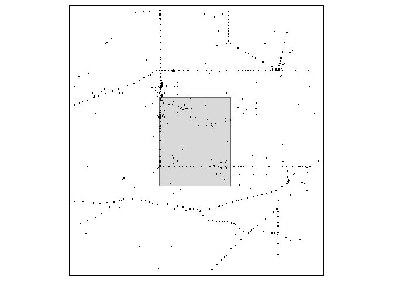
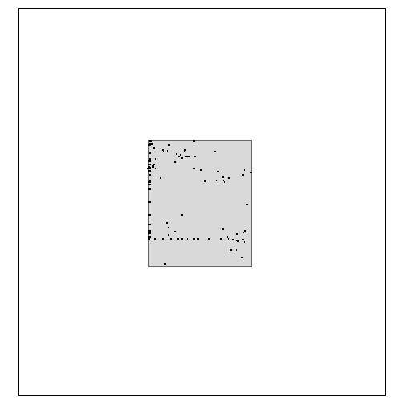

The goal of envClean is to help clean large, unstructured, biological (or environmental) data sets.
It assumes the desired end result is a plausible list of taxa recorded at space and time locations for use in further analysis. This is not the same as an authoritative checklist of taxa for any space and time locations.
While there are many implied and explicit decisions to make (e.g. there may be a lot of work to set up for new data sets), there is no manual input required once those decisions are made - these functions have the potential to provide an automated workflow from combined data through to analysis-ready data.
envClean is not on CRAN.
You can install the development version from GitHub with:
# install.packages("devtools")
devtools::install_github("Acanthiza/envClean")Load envClean
This example uses the flor_all data frame and the simple feature aoi. Converting flor_all to sf allows plotting them together.
Load flor_all
flor_all <- tibble::as_tibble(flor_all)Convert flor_all to sf and plot together with aoi.
flor_all_sf <- flor_all %>%
sf::st_as_sf(coords = c("long", "lat")
, crs = 4326
)
tmap::tm_shape(aoi
, bbox = sf::st_bbox(flor_all_sf)
) +
tmap::tm_polygons() +
tmap::tm_shape(flor_all_sf) +
tmap::tm_dots()
Filtering flor_all to aoi is done with filter_aoi.
flor_aoi <- filter_aoi(flor_all
, use_aoi = aoi
, crs_aoi = sf::st_crs(aoi)
) %>%
envFunc::add_time_stamp()
#> Joining, by = c("lat", "long")
flor_aoi
#> # A tibble: 3,396 x 13
#> lat long data_name site date original_name cover cover_code quad_x quad_y rel_dist month year
#> <dbl> <dbl> <chr> <chr> <date> <chr> <int> <chr> <int> <int> <dbl> <int> <int>
#> 1 -34.6 140. BDBSA 216 1990-07-12 Eucalyptus gracilis NA "2" 30 30 100 7 1990
#> 2 -34.6 140. BDBSA 216 1990-07-12 Eucalyptus oleosa (NC) NA "2" 30 30 100 7 1990
#> 3 -34.6 140. BDBSA 216 1990-07-12 Brassica tournefortii NA "T" 30 30 100 7 1990
#> 4 -34.6 140. BDBSA 216 1990-07-12 Beyeria opaca NA "T" 30 30 100 7 1990
#> 5 -34.6 140. BDBSA 216 1990-07-12 Eucalyptus socialis (NC) NA "T" 30 30 100 7 1990
#> 6 -34.6 140. BDBSA 216 1990-07-12 Eucalyptus brachycalyx NA "1" 30 30 100 7 1990
#> 7 -34.6 140. BDBSA 216 1990-07-12 Myoporum platycarpum (NC) NA "T" 30 30 100 7 1990
#> 8 -34.6 140. BDBSA 216 1990-07-12 Eucalyptus dumosa NA "1" 30 30 100 7 1990
#> 9 -34.6 140. BDBSA 216 1990-07-12 Melaleuca lanceolata NA "T" 30 30 100 7 1990
#> 10 -34.6 140. EGIS SUP2006-2 1990-07-12 Eucalyptus gracilis NA "" NA NA 100 7 1990
#> # ... with 3,386 more rowsCheck that spatial filter worked.
flor_aoi_sf <- flor_aoi %>%
sf::st_as_sf(coords = c("long", "lat")
, crs = 4326
)
tmap::tm_shape(aoi
, bbox = sf::st_bbox(flor_all_sf)
) +
tmap::tm_polygons() +
tmap::tm_shape(flor_aoi_sf) +
tmap::tm_dots()
envClean
The following functions and data sets are provided in envClean. See https://acanthiza.github.io/envClean/ for more examples.
| object | class | description |
|---|---|---|
| add_cover | function | Generate best guess of cover for each taxa*context |
| add_lifeform | function | Generate best guess of lifeform for each taxa*context |
| aoi | sf and data.frame | Simple feature to define a geographic area of interest. |
| filter_aoi | function | Filter a dataframe with e/n or lat/long to an area of interest polygon (sf) |
| filter_counts | function | Filter any context with less instances than a threshold value |
| filter_prop | function | Filter taxa recorded at less than x percent of visits |
| filter_spat_rel | function | Filter data frame to specified spatial reliability |
| filter_taxa | function | Clean/Tidy to one row per taxa*Visit |
| filter_text_col | function | Filter a dataframe column on character string(s) |
| find_taxa | function | Find how taxa changed through the cleaning/filtering/tidying process |
| flor_all | tbl_df, tbl and data.frame | Example of data combined from several data sources. |
| get_gbif_common | function | Find common name from GBIF |
| get_gbif_tax | function | Get taxonomy from href{https://www.gbif.org/dataset/d7dddbf4-2cf0-4f39-9b2a-bb099caae36c}{GBIF Backbone Taxonomy}. |
| lufilter | tbl_df, tbl and data.frame | Dataframe of filtering steps |
| lurank | tbl_df, tbl and data.frame | Dataframe of taxonomic ranks |
| make_cover | function | Make a single (numeric, proportion) cover column from different sorts of |
| make_effort_mod | function | Distribution of credible values for taxa richness. |
| make_effort_mod_pca | function | Model the effect of principal components axes on taxa richness. |
| make_env_pca | function | Principal components analysis and various outputs from environmental data |
| make_ind_status | function | Make indigenous status lookup |
| make_lifeform | function | Get unique lifeform across taxa, perhaps including further context |
| make_taxa_taxonomy | function | Make taxonomy lookups |
| rec_vis_sit_tax | function | How many records, visits, sites and taxa in a dataframe |